История эволюции
Первая ЭВМ на вакуумных лампах. Вес 27 тонн. Она доказала: машина может считать быстрее человека в тысячи раз.
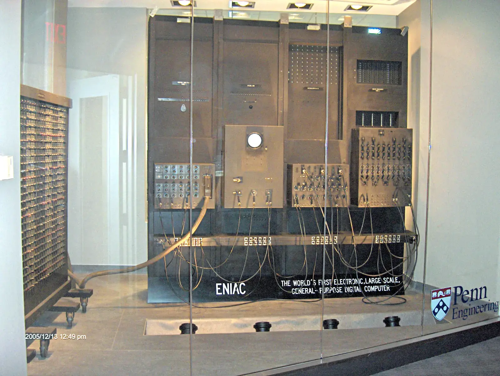
Второе поколение ЭВМ. Машины стали меньше, надежнее и холоднее. Появились первые языки программирования.
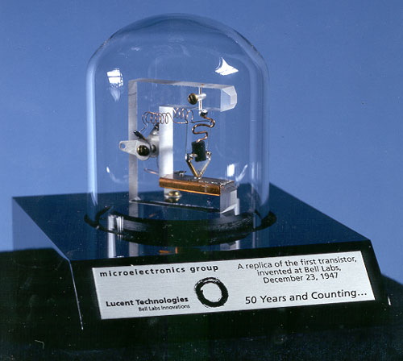
Группа ученых впервые вводит термин "Искусственный интеллект". Ставится цель: научить машину мыслить как человек.
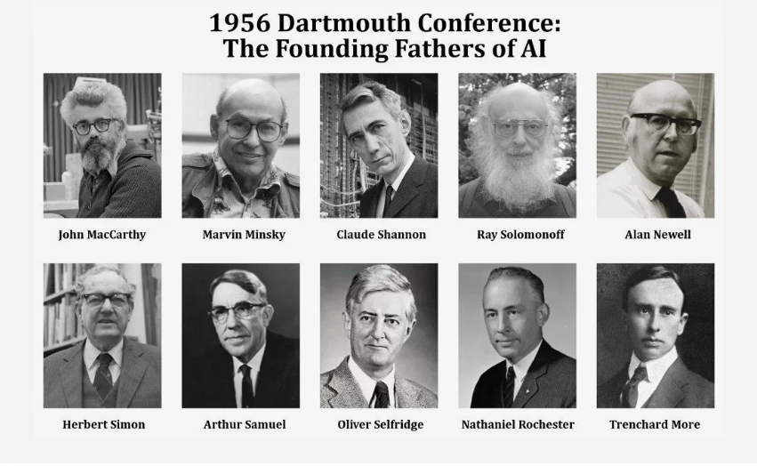
Третье поколение. Сотни транзисторов теперь умещаются на одном кристалле. Появилась многозадачность.
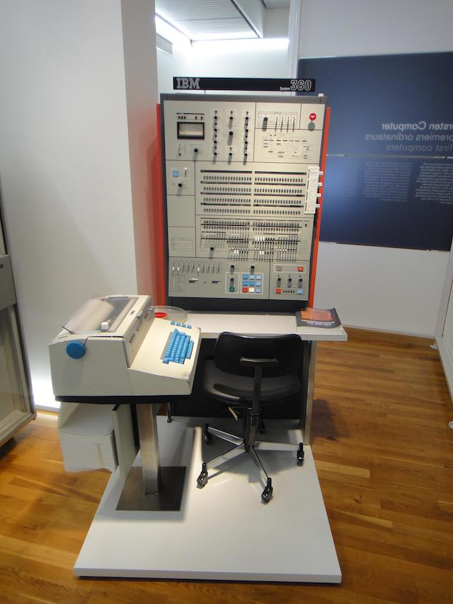
Четвертое поколение. Весь процессор на одном чипе. Компьютер перестал быть шкафом и стал персональным инструментом.
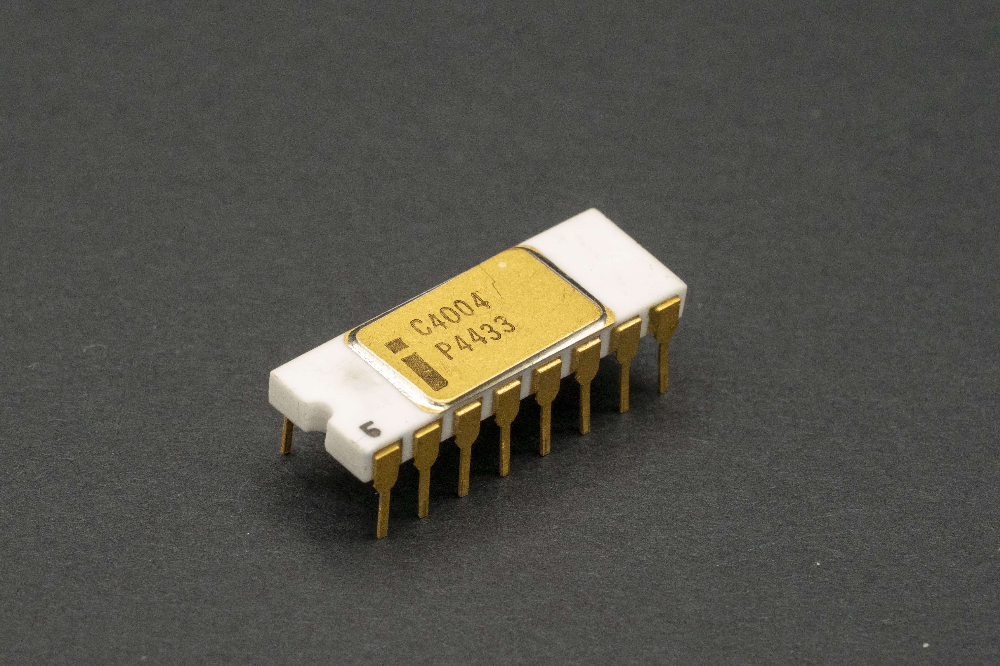
Переход от простых вычислений к "обработке знаний". Начало активных разработок в области Искусственного Интеллекта.
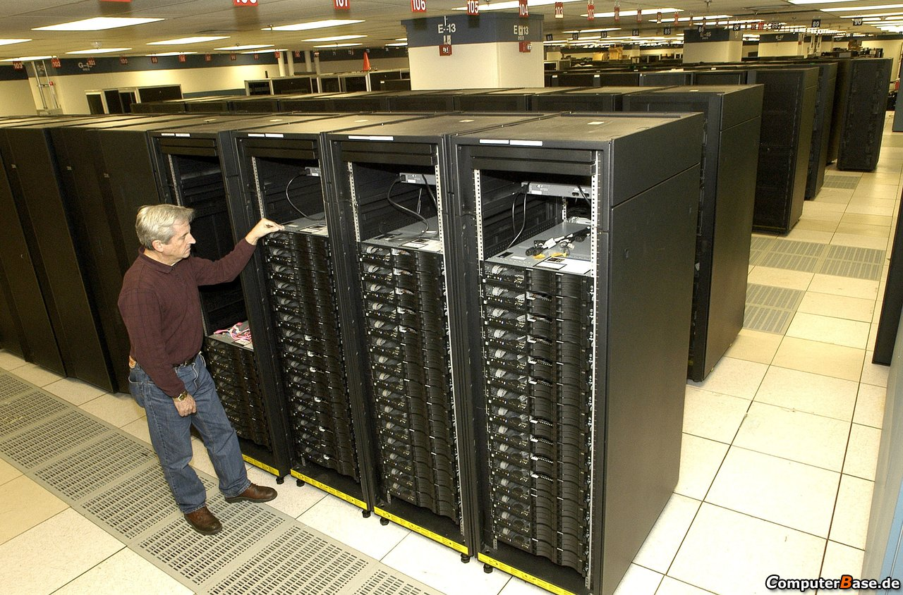
BlackRock создает программу для анализа рисков по облигациям. Тогда это была лишь сложная база данных на мощной ЭВМ.
С усложнением нейросетей возникла проблема: даже создатели не всегда понимают, почему ИИ принял именно такое решение.
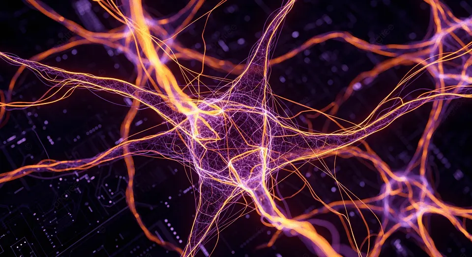
Экспериментальный ИИ от Microsoft за сутки научился у пользователей плохим вещам. Важнейший урок по этике ИИ.
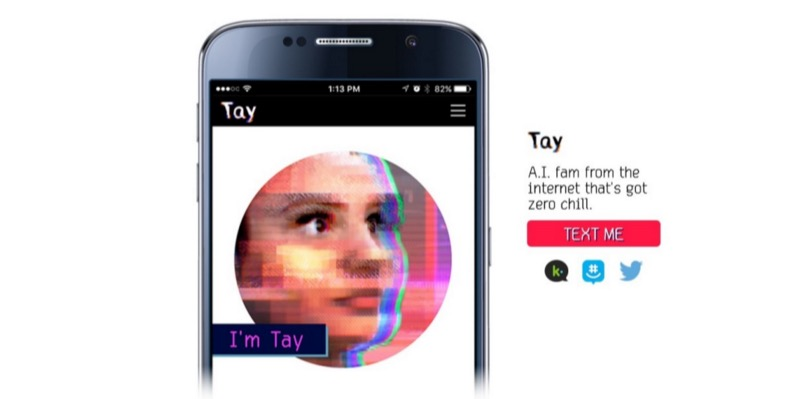
Появление GPU и огромных массивов данных позволило нейросетям научиться распознавать лица и голос лучше людей.
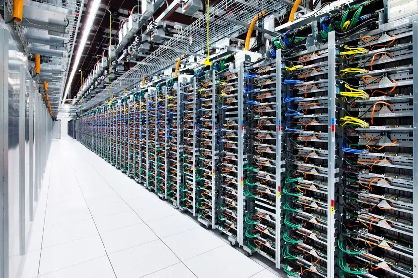
ChatGPT доказал всему миру: искусственный интеллект может писать код, стихи и вести осмысленный диалог.
Финансовая махина BlackRock теперь управляется генеративным ИИ, анализируя триллионы долларов в реальном времени.
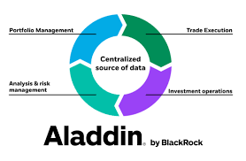
ИИ уже сегодня находит рак на ранних стадиях и моделирует лекарства, на создание которых ушли бы десятилетия.
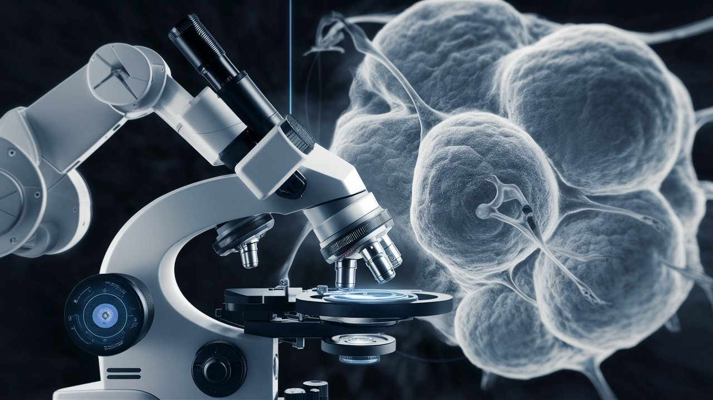
ИИ не заменит человека, но он освободит его от рутины, оставив место для творчества и стратегии.
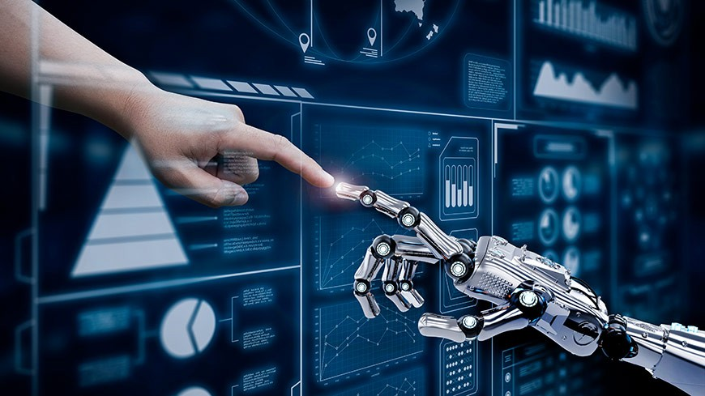
Человека заменит не искусственный интеллект, а человек, умеющий пользоваться искусственным интеллектом. Учитесь быть соавторами будущего!
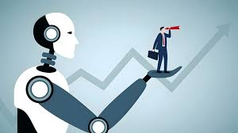